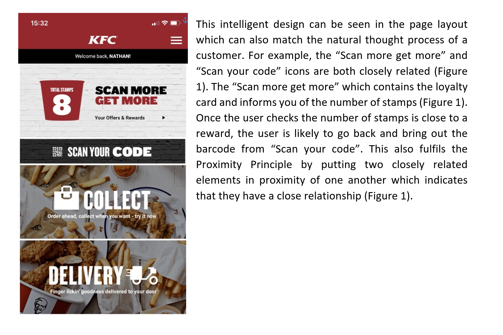
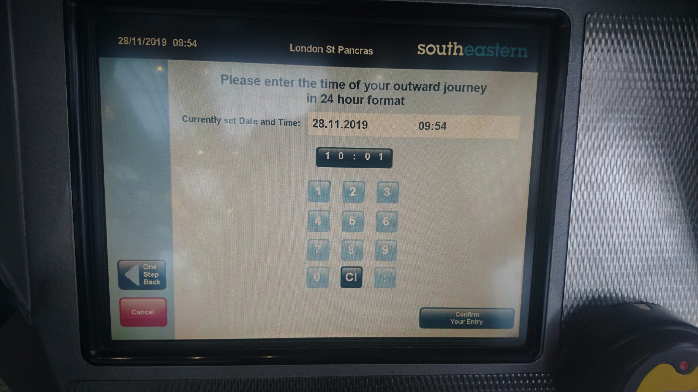

CO582: Computer Interaction and User Experience
Feedback on assignment 2
Tomas Petricek
email: t.petricek@kent.ac.uk
twitter: @tomaspetricek
office: S129A
{kind=link}
General notes
General notes
Common issues
Is the scope of the analysis reasonable?
Found some interesting love/hate points?
This is not a review for a magazine
Reference to user interaction principles
Readability, structure and formatting
General notes
What theories to use?
10 Usability Heuristics by Jakob Nielsen
Design principles of Don Norman
Different kinds of errors
Fitts' law for mouse navigation
Metaphors with fits and misfits
Multiple modes and mode errors
Work examples
PlayStation 3

Is there any interface criticism at all?
What is confusing about the button design?
KFC app
Contrast to highlight the "Scan more get more" deal
Proximity between the banner and the first action
Smartphone interface

What aspect of smartphone interface is this about?
Notes on Android UI, phone usage, etc.
Watch and clock

Criticism with reference to specific principles
Choice of a few: alignment and contrast
Sports app

What is this about
and who wrote it?
What are major
topics covered?
What is the picture
in the corner about?
NordVPN

Title, author, sections with headings
Figures are clear and have numbers and labels
Washing machine

Highlights important points about the interface (arrows)
Adds labels for hard to read text
Interface examples
Surface Pro keyboard
Surface Pro keyboard
Fn key for special keys
Behaves as F1, F2, etc. when turned off
Behaves as volume, brightness when turned on"
Genuine usability issues
Closing application when turning sound off!
Navigating in code editor jumps to another page
Mode errors
Mode is indicated, but indicator is hard to see
Very easy to switch mode by accident
OneNote application

OnNote application
Notebook metaphor
OneNote is like a physical notebook
What are the fits and misfits of the metaphor?"
Notebook fits
Structure with notebooks and pages
Drawing with a pen, eraser on the back
Notebook misfits
Advanced tools for moving text around
It wouldn't occur to you that you can do this
Southeastern tickets

Southeastern tickets

Southeastern tickets

Southeastern tickets
Southeastern tickets

Southeastern tickets

Southeastern tickets
Flexibility and efficiency of use (Nielsen)
Provides easy default option
A button for "Tickets for later travel"
Visibility (Norman)
Super off-peak ticket is out of sight
Hidden behind "later travel" when you travel now!
Mode errors
Different ticket options shown in different modes
You do not even know there are two modes!
Summary
CO582: Feedback on Assignment 2
What are the most important lessons
- Think about interactions and usability
- Support your argument with theories
- Format and structure documents well!
Tomas Petricek
t.petricek@kent.ac.uk | @tomaspetricek
References
Books
-
HCI Models, Theories and Frameworks, ed. J. Carroll
Chapter 3 (Motor behavior), Chapter 5 (Cognitive dimensions), Chapter 8 (Distributed cognition)
Papers